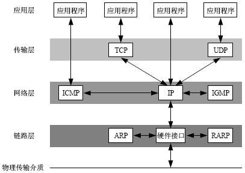
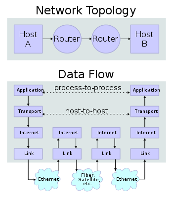
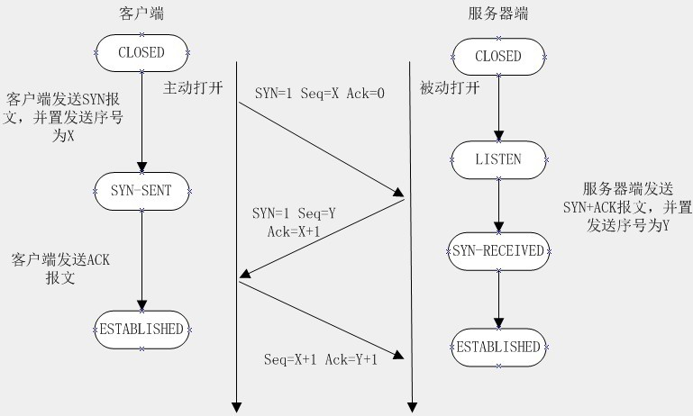

简单理解Socket
TCP/IP
要想理解 socket 首先得熟悉一下 TCP/IP 协议族， TCP/IP（Transmission Control Protocol/Internet Protocol）即传输控制协议/网间协议，定义了主机如何连入因特网及数据如何再它们之间传输的标准，
从字面意思来看 TCP/IP 是 TCP 和 IP 协议的合称，但实际上 TCP/IP 协议是指因特网整个 TCP/IP 协议族。不同于 ISO 模型的七个分层，TCP/IP 协议参考模型把所有的 TCP/IP 系列协议归类到四个抽象层中
应用层：TFTP，HTTP，SNMP，FTP，SMTP，DNS，Telnet 等等
传输层：TCP，UDP
网络层：IP，ICMP，OSPF，EIGRP，IGMP
数据链路层：SLIP，CSLIP，PPP，MTU
每一抽象层建立在低一层提供的服务上，并且为高一层提供服务，看起来大概是这样子的:


在 TCP/IP 协议中两个因特网主机通过两个路由器和对应的层连接。各主机上的应用通过一些数据通道相互执行读取操作。

Socket
我们知道两个进程如果需要进行通讯最基本的一个前提能能够唯一的标示一个进程，在本地进程通讯中我们可以使用PID来唯一标示一个进程，但PID只在本地唯一，网络中的两个进程PID冲突几率很大，这时候我们需要另辟它径了，我们知道IP层的ip地址可以唯一标示主机，而TCP层协议和端口号可以唯一标示主机的一个进程，这样我们可以利用ip地址＋协议＋端口号唯一标示网络中的一个进程。
能够唯一标示网络中的进程后，它们就可以利用 socket 进行通信了，什么是 socket 呢？我们经常把 socket 翻译为套接字，socket 是在应用层和传输层之间的一个抽象层，它把 TCP/IP 层复杂的操作抽象为几个简单的接口供应用层调用已实现进程在网络中通信。

socket 起源于 UNIX，在 Unix 一切皆文件哲学的思想下，socket 是一种"打开—读/写—关闭"模式的实现，服务器和客户端各自维护一个"文件"，在建立连接打开后，可以向自己文件写入内容供对方读取或者读取对方内容，通讯结束时关闭文件。
socket通信流程
socket 是"打开—读/写—关闭"模式的实现，以使用 TCP 协议通讯的 socket 为例，其交互流程大概是这样子的

- 服务器根据地址类型（ipv4,ipv6）、socket 类型、协议创建 socket
- 服务器为 socket 绑定ip地址和端口号
- 服务器 socket 监听端口号请求，随时准备接收客户端发来的连接，这时候服务器的 socket 并没有被打开
- 客户端创建 socket
- 客户端打开 socket，根据服务器ip地址和端口号试图连接服务器 socket
- 服务器 socket 接收到客户端 socket 请求，被动打开，开始接收客户端请求，直到客户端返回连接信息。这时候 socket进 入阻塞状态，所谓阻塞即 accept() 方法一直到客户端返回连接信息后才返回，开始接收下一个客户端谅解请求
- 客户端连接成功，向服务器发送连接状态信息
- 服务器 accept 方法返回，连接成功
- 客户端向 socket 写入信息
- 服务器读取信息
- 客户端关闭
- 服务器端关闭
三次握手
在 TCP/IP 协议中，TCP 协议通过三次握手建立一个可靠的连接

-
第一次握手：客户端尝试连接服务器，向服务器发送 syn 包（同步序列编号 Synchronize Sequence Numbers），syn=j，客户端进入 SYN_SEND 状态等待服务器确认
-
第二次握手：服务器接收客户端 syn 包并确认（ack=j+1），同时向客户端发送一个 SYN 包（syn=k），即 SYN+ACK 包，此时服务器进入 SYN_RECV状态
-
第三次握手：客户端收到服务器的 SYN+ACK 包，向服务器发送确认包ACK(ack=k+1），此包发送完毕，客户端和服务器进入 ESTABLISHED 状态，完成三次握手
定睛一看，服务器 socket 与客户端 socket 建立连接的部分其实就是大名鼎鼎的三次握手

参考